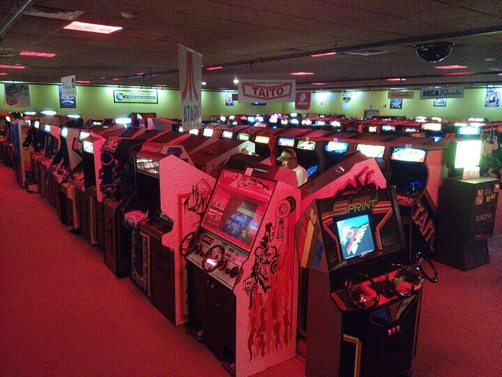
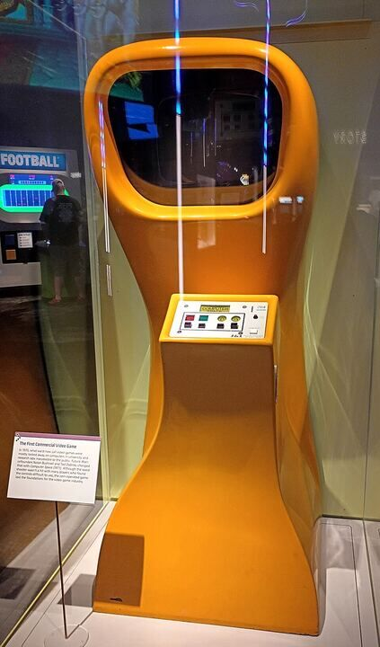
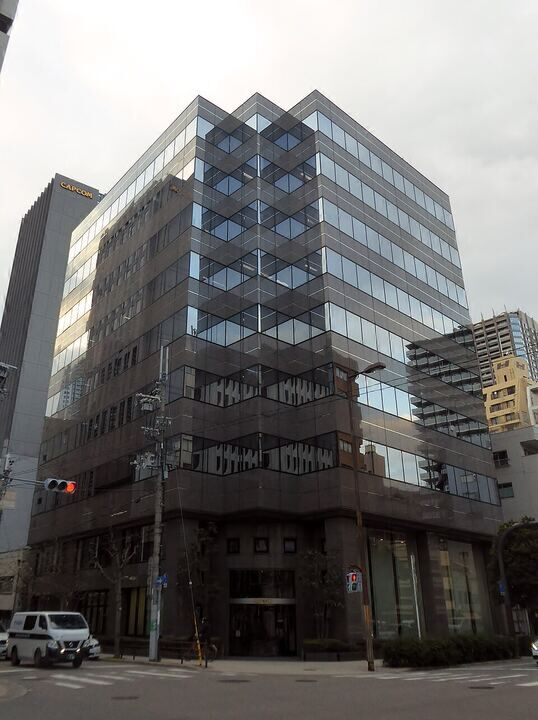
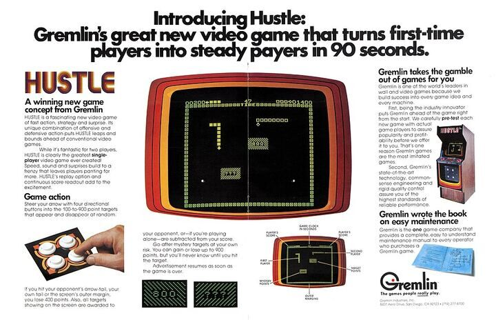
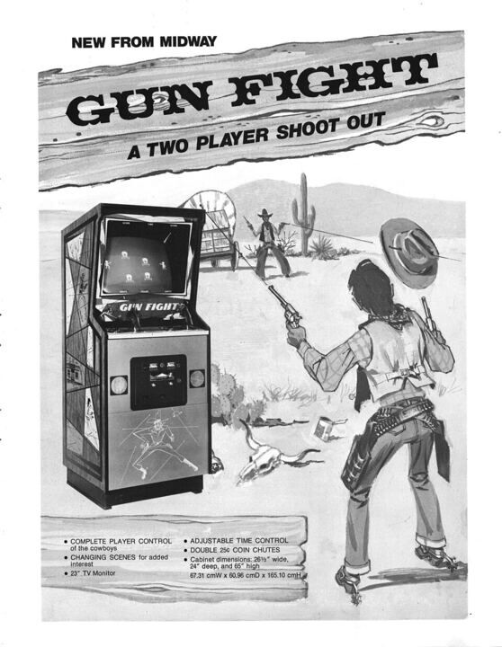
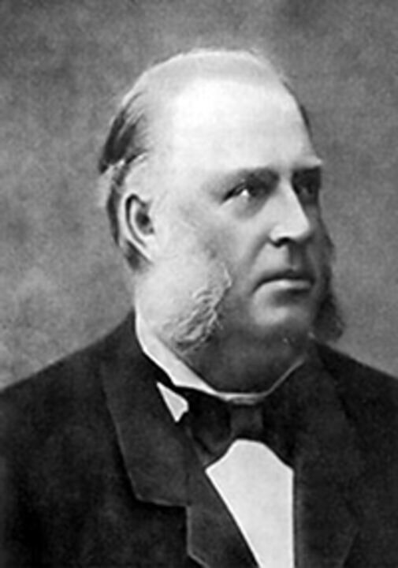
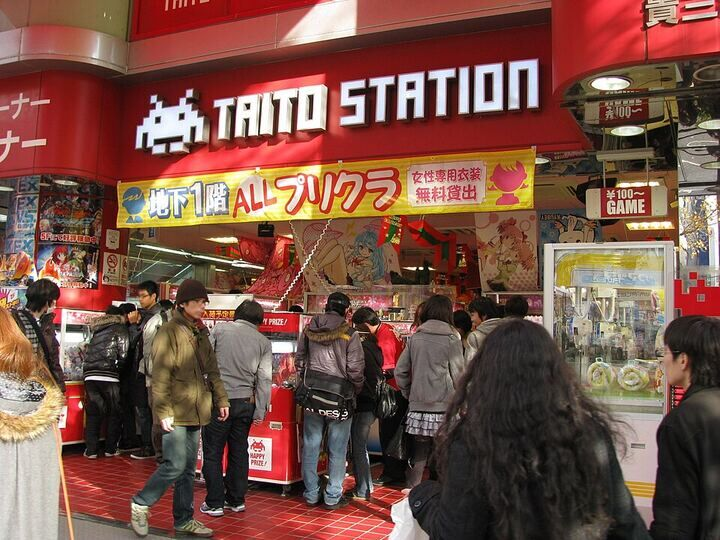

The games in this cabinet come from a handful of companies: a start-up in California, a vodka importer turned arcade giant in Tokyo, a pulp mill in Finland, a candy-shop owner’s company in Osaka. This chapter gives each of them a few pages.
Historians call the late 1970s and early 1980s the golden age of arcade video games. Its start is usually dated to Space Invaders, in 1978 or 1979, and its end to 1983, when takings began a long decline.
In between, the numbers were dizzying. In 1980 Americans spent $2.8 billion in quarters on arcade games, three times as much as the year before. By 1982 the figure was about $8 billion, more than pop music took in sales and more than Hollywood’s films. North America had 24,000 arcades and 1.5 million arcade machines, and the average game stayed in them four to six months.

Clones, home consoles and worried parents ended the boom. Arcades came back in the early 1990s with fighting games, Street Fighter II first among them.
Sources: Wikipedia, “Golden age of arcade video games”, citing Steven L. Kent, The Ultimate History of Video Games (2001), and Everett M. Rogers and Judith K. Larsen, Silicon Valley Fever (1984).
Founded 27 June 1972 · Sunnyvale, California · Nolan Bushnell and Ted Dabney
Nolan Bushnell and Ted Dabney were engineers at Ampex. As Syzygy Engineering they had made Computer Space (1971), an early coin-operated video game that Nutting Associates built and that sold poorly. When they founded their own company, Syzygy was taken, so Bushnell, a player of the board game Go, picked a word from it: atari, the warning that a stone is about to be captured. Each of them had put $250 into Syzygy.

Pong paid for everything that followed. Its first factory was an old roller rink in Santa Clara. In 1976 Warner Communications bought Atari for $28 million, and the next year an Atari venture opened the first Pizza Time Theatre, later Chuck E. Cheese. A Wall Street analyst of the time called Atari “the fastest growing company in U.S. history.”
One day the front desk called Allan Alcorn: “We’ve got a hippie kid in the lobby. Should we call the cops or let him in?” It was the young Steve Jobs, asking for a job. Alcorn hired him. Co-workers complained about him, so Alcorn had him work only at night; Atari, Bushnell said, created an engineering night shift, and Jobs was the only one on it.
In 1984 Warner split Atari up. The home business went to Jack Tramiel; the arcade side became Atari Games, in Milpitas, California, maker of Gauntlet, Paperboy, Klax and Hard Drivin’. It later became part of Midway and closed in 2003.
In this cabinet: Rally (Pong), Bouncer (Breakout), Meteors (Asteroids) and, from Atari Games, Rounds (Paperboy).
Sources: Wikipedia, “Atari, Inc.”, “Atari Games” and “Allan Alcorn”; Michael Current, Atari history timeline; Hi-Res magazine; Game Developer, “The history of Atari: 1971–1977”.
Founded 1979 as I.R.M. Corporation; Capcom Co., Ltd. from 11 June 1983 · Osaka, Japan · Kenzo Tsujimoto
Kenzo Tsujimoto, the son of a blacksmith, once ran a candy shop in Osaka. Children queued at its cotton-candy machine, he noticed, for the show of the candy being made more than for the candy. He began selling those machines across Japan, then amusement machines, and founded the companies that became Irem and Capcom.
The name is short for “Capsule Computers”, Capcom’s word for its arcade machines: capsules packed with fun, with a hard shell against copying. Its first arcade video game was Vulgus (1984). With 1942, later that year, Capcom began designing its games for players all over the world, and with its version for the Nintendo Entertainment System it moved into home consoles.

Yoshiki Okamoto remembered how Noritaka Funamizu came for his job interview, saw an arcade cabinet in the corner, said “Oh, I know this game!” and started playing it. “A bold maneuver,” said Okamoto. “He got hired!” Funamizu went on to work on Street Fighter II.
Tsujimoto later bought land in Napa, California, and founded a winery there; his sons Haruhiro and Ryozo work at Capcom.
In this cabinet: Raider (1942) and Brawler (Street Fighter II).
Sources: Wikipedia, “Capcom” and “Kenzo Tsujimoto”; Capcom staff interview (1991), translated by shmuplations.com.
Founded 1970 · San Diego, California · Frank Fogleman and Carl Grindle
Gremlin began as a contract engineering firm and moved into coin-operated “wall games” in 1973: panels of lights that played a game such as baseball. Its first video game, Blockade, drew 3,000 orders at a Chicago trade show in 1976, but clones arrived so fast that only a fraction of those machines shipped. Gremlin also made a home computer built into an office desk, the Noval 760; it sold poorly.
The company was meant to be called Grindleman Industries, after its two founders. A clerk at the Delaware Secretary of State’s office misheard the name over the telephone and registered it as Gremlin.

Gremlin patented Blockade, but the patent took a year and a half. “No one even remembered Blockade,” said its designer Lane Hauck. “In the game business, patents are absolutely worthless.” Sega bought Gremlin in 1978; as Gremlin/Sega it brought Frogger and Zaxxon to America.
In this cabinet: Serpent, whose snake goes back to Blockade.
Sources: Wikipedia, “Gremlin Industries” and “Blockade (video game)”.
Midway founded 1958 · Henry Ross and Marcine Wolverton / Dave Nutting Associates, about 1974 · Milwaukee · David Nutting and Jeff Frederiksen
Midway made amusement machines and, from 1969, belonged to Bally. Through the 1970s it traded games with Taito, and in 1975 Bally asked Dave Nutting’s small company to remake Taito’s Western Gun with a microprocessor. The result, Gun Fight, designed by Nutting, built by Jeff Frederiksen and programmed by Tom McHugh, was the first commercially successful video game to run on a microprocessor.

Midway’s licence for Space Invaders made it the leading American maker of arcade video games, followed by Namco’s Galaxian and Pac-Man. Nutting’s team, bought by Bally in 1977, kept making games for Midway, among them Wizard of Wor, until it closed in 1984.
Before games, David Nutting was an industrial designer, and on his own time he designed the body of the Jeep Wagoneer. As a boy he took household things apart to see how they worked; his father wanted him to be a department-store salesman. After games he built an experimental helicopter and wrote a book on quantum mechanics.
In this cabinet: Warlock (Wizard of Wor).
Sources: Wikipedia, “Midway Games”, “David Nutting” and “Tomohiro Nishikado”.
Founded 1865 · Tampere, Finland · Fredrik Idestam
Nokia began as a pulp mill on the rapids at Tampere, founded by the mining engineer Fredrik Idestam. A second mill near the town of Nokia gave the company its name in 1871. Over the next century it made paper, rubber goods, cables and, for decades, gas masks; in the 1980s it made televisions too.

Its first mobile phone was a car phone, the Mobira Senator of 1982; Nokia’s board then thought of mobile phones as “James Bond gadgets”. From 1998, for a decade, Nokia was the largest maker of mobile phones in the world. Microsoft bought the phone business in 2014, and Nokia now builds the networks phones talk to.
Nokia’s own blog once gave the best possible score in the original Snake: 312 points on level 1 and 2,008 on level 9. Players in Australian tournaments reached the same 2,008.
In this cabinet: Serpent (Snake).
Sources: Wikipedia, “Nokia” and “Snake (1998 video game)”; Nokia Conversations blog (2009, archived).
Founded 24 August 1953 · Japan · Michael Kogan
Michael Kogan was born in Odesa in 1920 and started his first business in Shanghai, trading wigs, floor coverings and hog bristles. It was called Taitung. The name Taito, 太東, joins the characters for the Pacific Ocean and the Far East. In Tokyo his Taito Trading Company first made vodka, the first in Japan, and imported vending machines; from 1955 it dealt in vending machines and jukeboxes.
Without a licence to import jukeboxes, Taito bought broken ones from American military bases and rebuilt them from the working parts. In the 1960s it made electro-mechanical games, and in 1973 its first video game, Elepong.

Tomohiro Nishikado, Taito’s great designer, had been in his school’s magic club. In his electro-mechanical game Sky Fighter (1971) he used three hidden mirrors to make model planes fly with no strings. On a visit to America, Atari’s president invited him to join Atari. As a joke he asked the salary, five or six times his pay at Taito. “Had I not been married, I honestly might have accepted.”
Square Enix bought Taito in 2005. Taito Station arcades still light up Japanese streets.
In this cabinet: Defender (Space Invaders) and Bubbler (Bubble Bobble).
Sources: Wikipedia, “Taito” and “Michael Kogan”; Nishikado interview from Game Maestro (2000), translated by shmuplations.com.